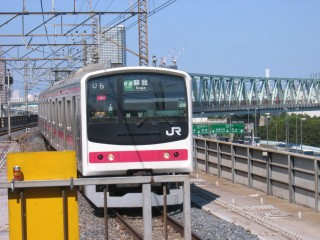 2006年2月の烏山線に味をしめて(?)、ゴールデンウィークにも出かけることにした。当初の目的は小湊鉄道だったのだが、海ほたるにも行ってみたくなったので久留里線に変更。写真は、新木場から乗った京葉線快速(205系)。舞浜で、ディズニーリゾートに行く客がゴッソリと降りる。
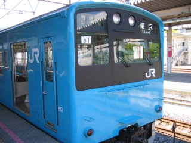 10:08頃、蘇我に到着。ブルーの103系も、そのうちなくなっちゃうかも～。撮っとかないとな～、と思ったら201系でやんの! このタイプって、関西からやってきたのか。103系は、一体どこ!?
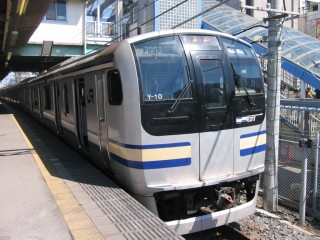 蘇我からは、内房線に乗り換える……と書きつつ、写真は外房線のE217系(上総一ノ宮行き)。九十九里浜か安房鴨川にでも行くのか、こっちの方が混んでいた。
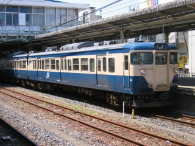 内房線に乗って、木更津に到着。写真は、蘇我から乗って来た木更津行きの113系。折り返しの千葉行きとなり、発車を待っている。この113系(横須賀線色)も東海道線113系(湘南色)と同様、そのうち引退になるのであろう。
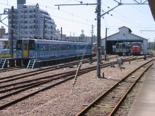 ホームから、久留里線の車庫を撮ってみる。ちなみに久留里線の使用する4番線(一番右側の線路)には、架線設備がない。
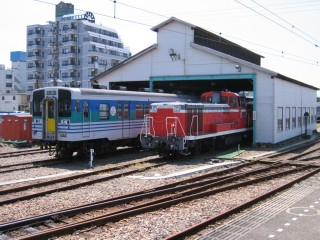 久留里線の車庫を、アップ(?)でもう一枚。ディーゼル機関車は、DD51ではなくDE10? ちゃんと確認しませんでした。
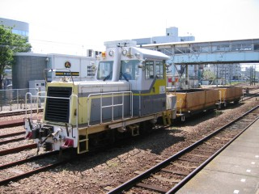 これは、中線に停車していた入換用ディーゼル機関車。関係ないけど、木更津駅の発車チャイムは「しょ、しょ、しょうじょうじ～」のメロディ。狸の腹鼓の伝説がある証誠寺は、駅から西へ400m行ったところにあるとのこと。
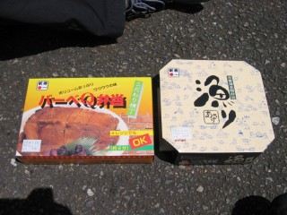 10:06に久留里線が行ってしまって、次は11:50までない。時間がありあまったので、昼メシを食うことにする。駅弁(バーベキュー弁当 720円・漁り弁当 1,000円)を購入。
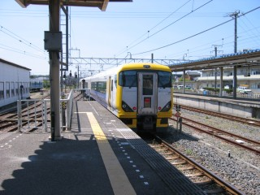 久留里線を待っている間にやってきた、特急さざなみ。この車両って、顔がダサくてイヤ～んな感じ。
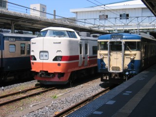 久留里線を待っている間にやってきた、臨時団体列車の183系(中央)。潮干狩りのツアーの模様。さすが、ゴールデンウィーク←なにがだ。
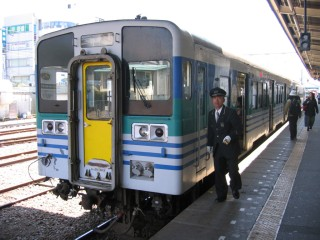 11:30、やっと来てくれた久留里線キハ38系。久留里線は、なんとタブレット方式。相模線も、電化される前はタブレット方式だった。なつかしい。
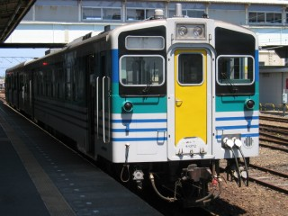 反対方向からパチリ(死語)。
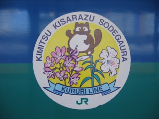 車体側面には、こんなマーク(?)が描かれている。烏山線は、七福神だったな。
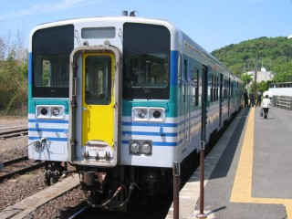 40分ほどかかって、久留里に到着。途中、交換駅は一つだけ。その性格上Wikipediaは教科書的な記述をしているので、読み物としては「久留里線の旅」の方がおもしろいかも。
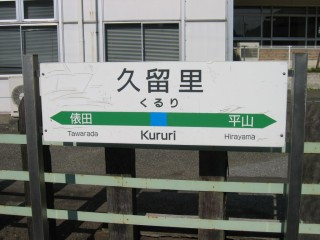 くるり～、く～るり～(意味不明)。
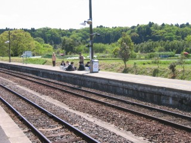 上りホームで待つ、地元の高校生達。終点の上総亀山駅で車両点検があったらしくて、上り列車が少々遅れているとのこと。
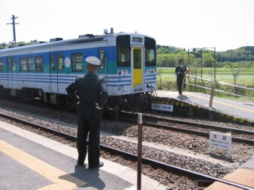 遅れてやってきた、上り列車。駅長さんも、ちょっとご機嫌ナナメです(ウソ)。
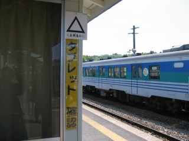 久留里と上総亀山間のタブレットは、「△」みたいですな。
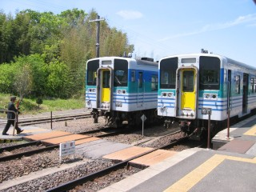 上下線のホームは、こんな感じで渡る。御殿場線の谷峨駅も、同じ構造。
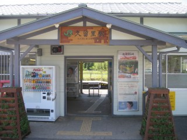 久留里駅の駅舎。自動券売機はあるけど、烏山線と同じでSuica精算は不可能。現金精算となる。木更津からは、400円。
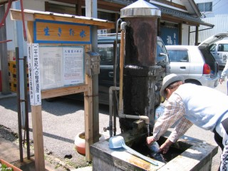 町のあちこちにある、「生きた水」と書かれた井戸。かなりの人が、ペットボトルに汲んでいっていた。当然だが、全員クルマで来ていた。少し飲んでみたが、そんなに滅茶苦茶うまいという程では……??
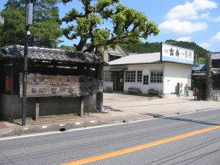 終点の上総亀山まで行かずに久留里で下車したのは、地酒が目当て。ここ、吉崎酒造で「吉寿」と「月華」を購入するためである。久留里線はそこそこ久留里止まりがある、という理由もあるけど。
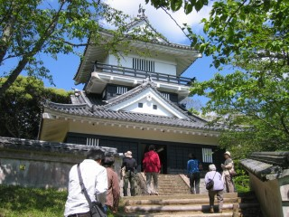 久留里で下車した、もう一つの理由。せっかくなので、久留里城(久留里城址資料館)へ行く。なにが「せっかく」なのかよくわかんないけど、まあ観光スポットということで。新緑の季節に来て、とても正解。プラプラ歩いて、吉崎酒造へ戻る。
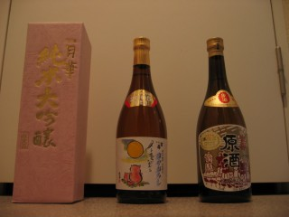 購入した銘柄は、「月華」・「吉寿 冷やおろし(2005年限定)」・「吉寿 原酒」の3本。2006年限定のものも欲しかったのだが、生ということで常温での運搬は断念。まだ「冷やおろし」しか飲んでいないが、大変おいしい。復路は木更津からバスに乗って、海ほたるを経由して川崎へ出た。
2006/03/08にYOKUWAKA on WWWのPageがInternet Explorer 6で見ると崩れてしまうことを書いたが、その後色々とCSSを直して一応解決。「一応」と書いたことに特に深い理由はないけど、「これで本当にいいのかな～」という思いも含まれている。あちこち調べてみると、やはりInternet Explorer 6はCSSの解釈にクセがあるみたい。しかし、Internet Explorer 6が「完全に悪い」というわけでもなさそう。とわいえ、両方に対応させる手間はかけたくないのが正直なところ。Internet Explorer 7では、正しい(という表現が妥当か否かという問題もあるが)解釈をして欲しい。
一ヶ月前だったか、Intellisync for PalmでCLIEとのHotSyncに失敗するようになった。自分はスケジュールだけNotesのカレンダーとIntellisyncで同期をとっているのだが、HotSyncでその部分(Intellisync予定表)にさしかかるとエラーになってしまう。幸いHotSyncがそこで終わってしまうのではなく、その部分だけスキップされるため被害範囲は狭いのだが、スケジュールが同期されないことにはかわりない。なんにせよ、困る。色々試してみて、結論としてはわざとパスワード欄を空(カラ)にすることで解決。毎回パスワードを手動入力すると、なぜかうまくいく。ナゾ。
諸所の事情で、この日にアキバヘ買い出しに行く。なんの買い出しかというと、実家の参号機(EVA-03)のハードウェア更改用パーツ。ケースや光学ドライブはそのまま使用するつもりなので、以下を購入する。
| 種類 | メーカー | 機種名.etc | 備考 |
|---|---|---|---|
| CPU | AMD | Sempron 3300+ (2GHz) | Palermo |
| M/B | ASUSTeK | K8N | Socket 754, NVIDIA nForce3 250 |
| RAM | ? | 512MB DIMM [DDR SDRAM] | CL=2.5 PC2700 |
| VGA | Canopus | MTVGA 9550L | AGP 8x, 1.5V |
| HDD | HITACHI | Deskstar T7K250 (HDT722525DLAT80) | Ultra ATA/133 |
| POWER | Owltech | Seasonic SuperCyclone SS-430HB | 430W |
ケースはそのまま使用するつもりといっても、電源ユニットは交換する必要があるだろう……んが、なにを買ったらいいのかわからない。店員に聞いて、無難なものを選択。そこそこ店はまわったのだが、全部フェイス プロショップで買ってしまった。フェイス プロショップは、東京メトロ銀座線の末広町の駅に近い。自分の場合は都営新宿線の岩本町の駅を利用するため、かなりの距離を歩く必要がある。荷物が、かなり重い。DSP版Windows XP Professional SP2のCD-ROMが、重たいに違いない←をひ。
諸所の事情で、東京ディズニーランドへ行く←って、イヤイヤ行ったんかい!? 東京ディズニーランドは、実に3年ぶり。って、そんなに行っていなかったのか。もっとも、それ以前はもっと間隔が空いていたんだけど。今回は昨年の東京ディズニーシーと同様、ショウやパレード観覧をメインにしてみた。とわいえ、結局かなりの数のアトラクションにも乗ったのだが。9:00に開園して、あっという間に21:00。楽しい時間は、光陰矢のごとし(そーゆー風に使うのか?)。シンデレラ城の改修工事とスティッチのいたずら書きを組み合わせるアイデアは、さすがディズニーといったところか。殺風景な工事の塀が、スティッチのいたずら書きでカモフラージュ(?)されてしまう。なるほど←なにがだ。
実家にて、参号機(EVA-03)のハードウェア更改。まずはバックアップだが、アプリケーションは入れ直しなのでデータのみ取得。ケースを開けて、再利用しないパーツを取り出す。SempronのCPUクーラーは、とっても取り付けやすくてよい。昔はM/Bのラインを破損したり、CPUのコア欠けとかあったりしたというのに。ハードウェアの作業は、いつも問題なく終わる。しかも早く。しかしソフトウェアの作業は、またしても大変。以前初号機(EVA-01)でもあった、突然の再起動が発生してしまう。ただしこれってソフトウェアの問題ではなく、M/Bがケースと接触しているとかが原因だったりするので、そこらへんを確認してみる。
M/Bをネジで止める位置を少しずらしてみたが、まだ完全に突然の再起動が発生しなくなったわけではなさげ。しばらく様子をみる。OS・デバドラ・Windows Update・メーラー・Officeと導入・設定していく。上のパラグラフで「またしても大変」と書いたけど、それほど大変というほどではなかったかも。一ヶ月も前のことなので忘れた(をひ)。すでにWAN回線がADSLになっているため、システム構成の全体のパフォーマンスはハードウェア更改前からそんなに悪くない。かわったのは、リソースが劇的に増えたこと。特にHDDの容量増加は、色々つぶしがきいて便利。それにしても、電源投入からデスクトップの表示までがメチャクチャ速いっス。
実家のプロバイダーはDTIなのだが、メールが送信できなくなったという。Windows Firewallの問題かと思ったのだが、そうではなかった。いつからなのかよくわからないのだが、SMTP認証が必要になっていたためだった。しかも、Webで設定する画面とリンクしているんだかいないんだが、これがまたよくわからない。ネットで調べると他にも同じように困っている人がいたので、キチンとアナウンスしたのか、はなはだあやしい。さらにうちはAL-Mail 32 ver1.13aを使用しているのだが、添付ファイルのメールはSMTP認証を設定してもNG(テキストのみのメールはOK)。試行錯誤の結果、/logオプションをつけると送信が可能なことがわかった。定期的にalmail.logを削除するように伝えて、撤収!